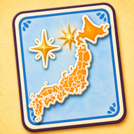
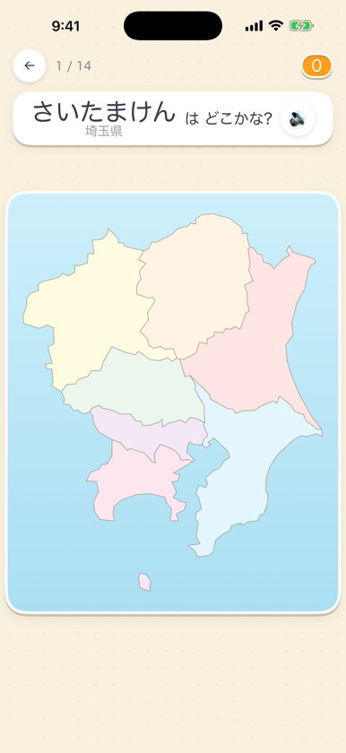
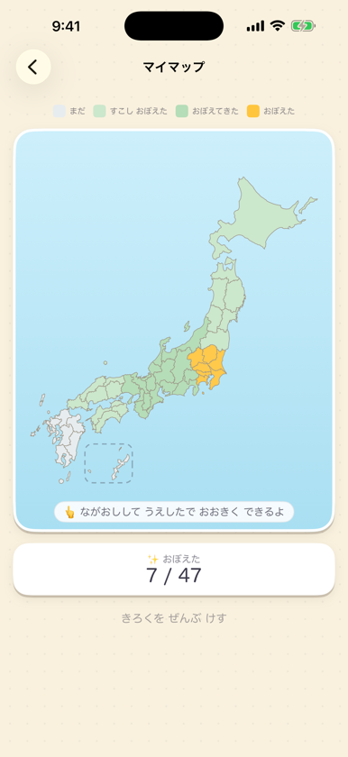
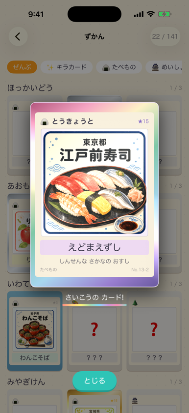
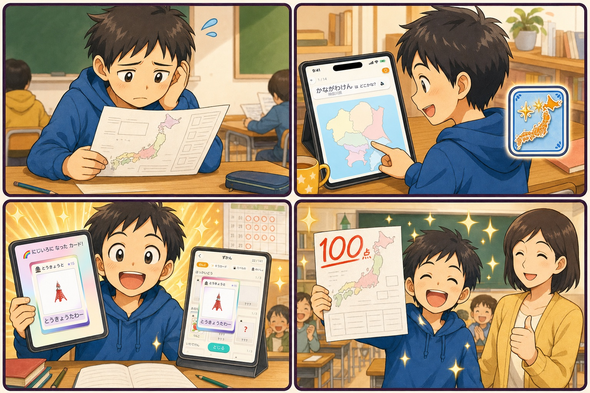
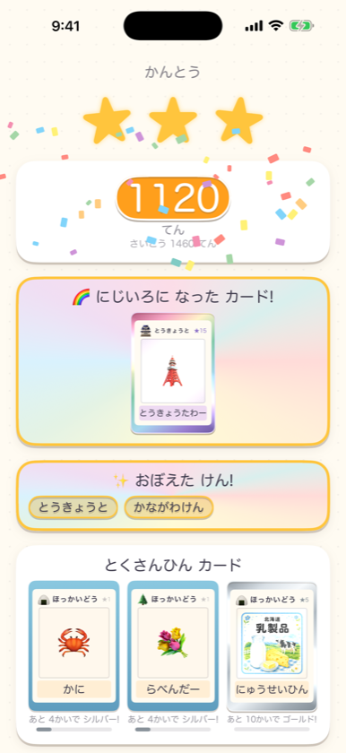

01
見て、聞いて、
MAP QUIZ
見て、聞いて、
地図をタップ
「北海道はどこ？」に地図で答えるクイズと、光った県の名前を答えるクイズを収録。地方ごとから全国チャレンジまで、自分のペースで取り組めます。

子ども向け
都道府県学習アプリ
地図をタップしてクイズに挑戦。正解してご当地カードを集めながら、47都道府県を楽しく身につけよう。

LEARN & PLAY
シンプルな地図クイズと、集めるほど変化するカード。小さな達成感を重ねながら、都道府県への興味を育てます。
MAP QUIZ
「北海道はどこ？」に地図で答えるクイズと、光った県の名前を答えるクイズを収録。地方ごとから全国チャレンジまで、自分のペースで取り組めます。
MY MAP
覚えた都道府県や得意な場所が、色と星でひと目でわかります。「つぎはここ！」を見つけやすく、少しずつ全国制覇を目指せます。

COLLECT CARDS
正解すると、その土地の名物や名所を描いたカードをゲット。全141枚のカードは、挑戦を重ねるとシルバー、ゴールド、にじいろへと輝きます。

A LITTLE SUCCESS STORY
これは、アプリで遊ぶうちに地図が好きになった、ある小学生のサクセスストーリーです。

県の場所がなかなか覚えられず、ちょっぴり自信をなくしていました。
地図をタップして答えるから、勉強というよりゲームの感覚で続けられます。
正解するたびにご当地カードが育ち、「もう一回！」が自然に増えていきます。
遊びながら何度も地図に触れたことで、自信をもって答えられました。
※ 漫画は本アプリの学習体験をもとにしたフィクションです。学習成果には個人差があり、テストの得点を保証するものではありません。
REAL APP SCREENS
漫画に登場した、クイズ・マイマップ・カード・結果画面をそのままご覧いただけます。

FOR KIDS & FAMILY
問題や選択肢を音声で読み上げ。ひらがなを読む途中のお子さまも遊べます。
すべて端末の中で動作。移動中や通信環境がない場所でも楽しめます。
広告表示もアプリ内課金もありません。すべての問題を最初から遊べます。